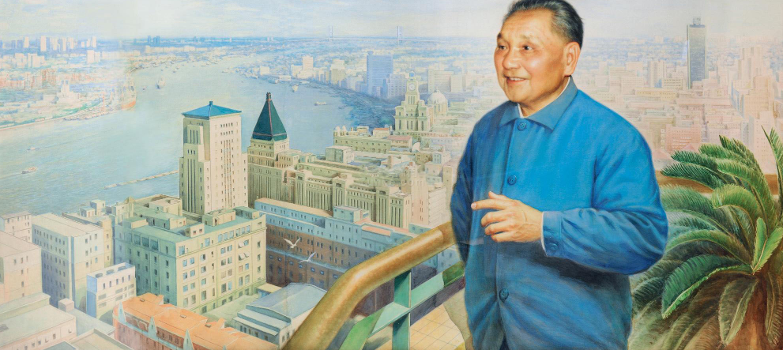

东风万里处处春

深圳、珠海、汕头、厦门经济特区的设立，是我们改革开放的一次大胆的尝试。经济特区是我国改革开放和现代化的窗口、排头兵和试验场。而浦东新区的开放，标志着我国改革开放的进一步深化。经济特区的建立，用实践证明了，党中央关于建立经济特区的战略决策是完全正确的，经济特区应该办下去，而且要办的更有质量，更有水平。
深圳、珠海、汕头、厦门经济特区的设立，是我们改革开放的一次大胆的尝试。经济特区是我国改革开放和现代化的窗口、排头兵和试验场。而浦东新区的开放，标志着我国改革开放的进一步深化。经济特区的建立，用实践证明了，党中央关于建立经济特区的战略决策是完全正确的，经济特区应该办下去，而且要办的更有质量，更有水平。